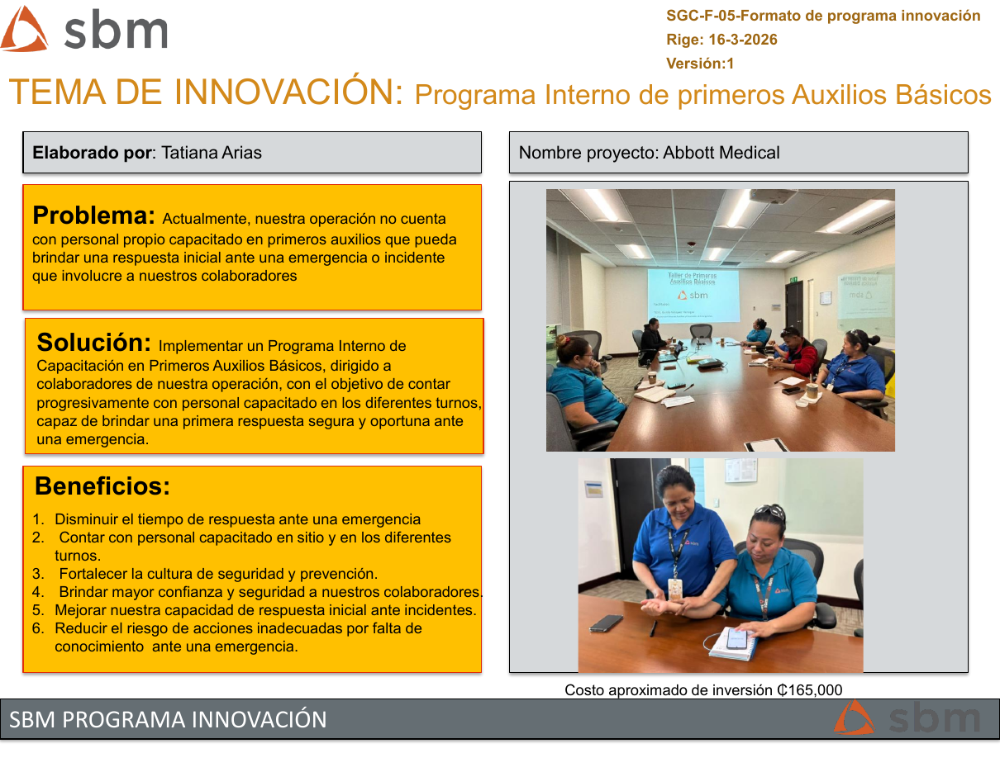
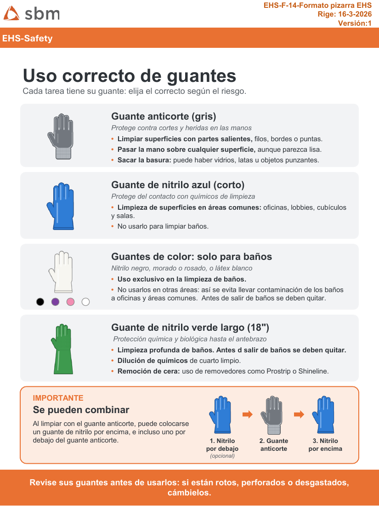
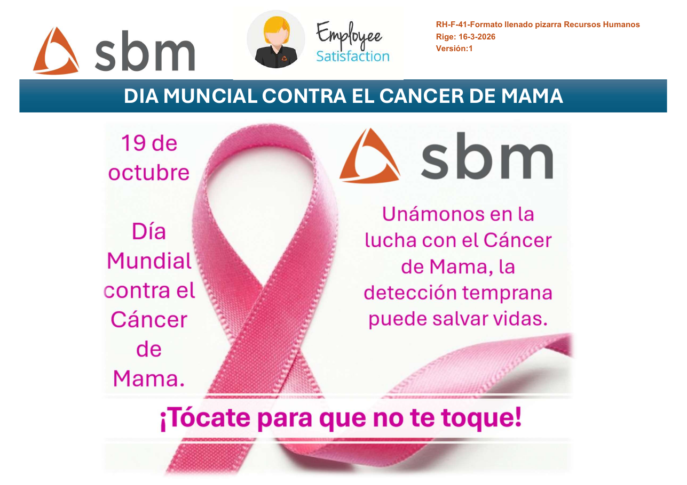
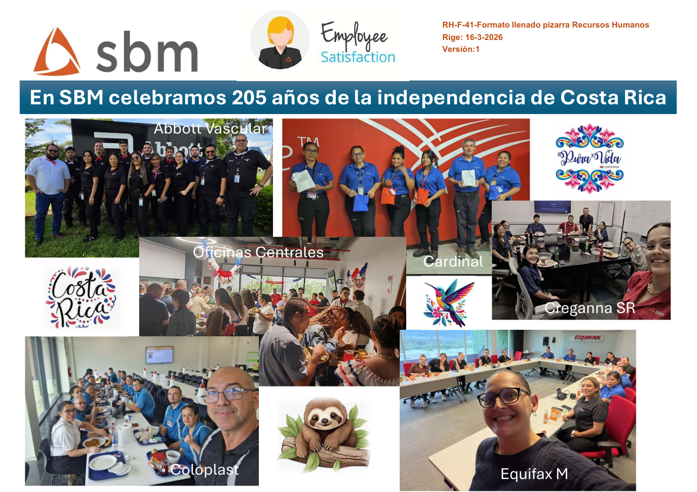
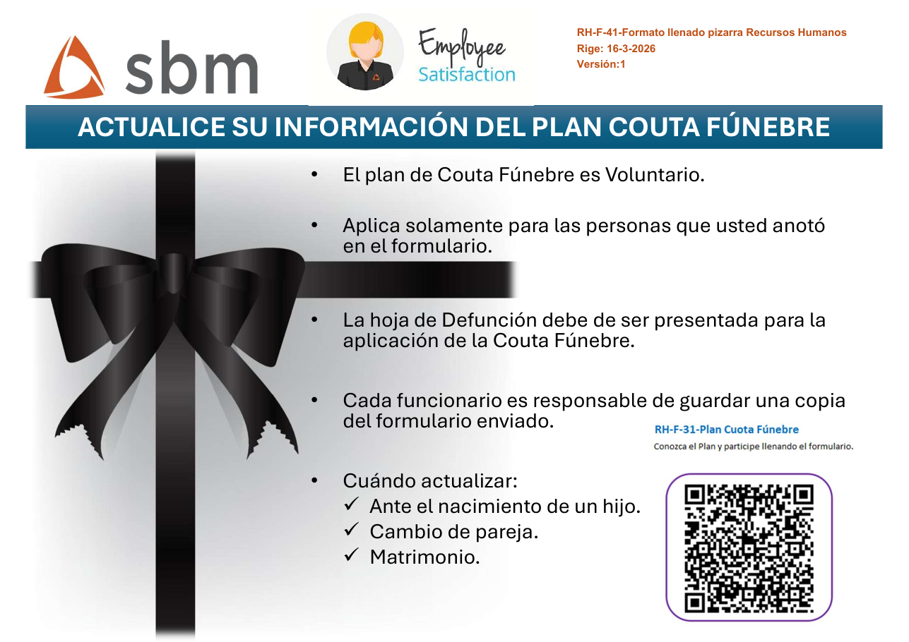
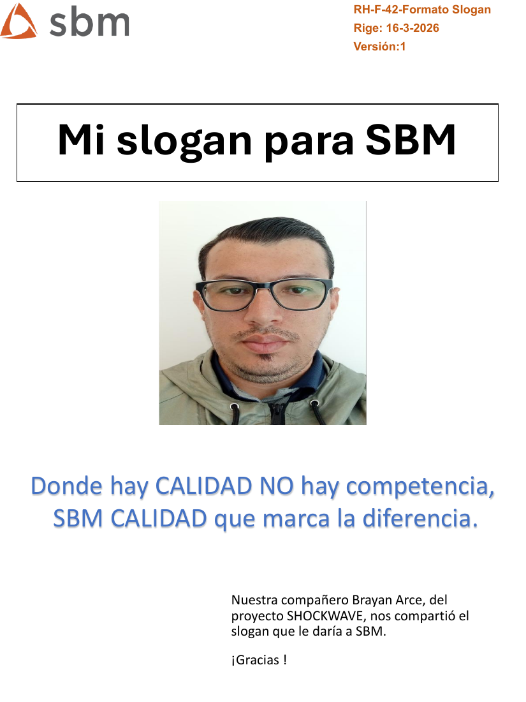

Destacado
Primeros Auxilios Básicos
Abbott Medical impulsa personal capacitado para responder de forma segura y oportuna ante emergencias.
Leer historia →Seguridad, personas e innovación que hacen avanzar nuestra operación.


Cómo elegir y combinar la protección correcta según el riesgo.

Unámonos en la lucha contra el cáncer de mama.
Datos y prácticas concretas para trabajar con mayor seguridad.
13 eventos: 8 relacionados con el trabajo y 5 no relacionados.
Ver estadísticas →Anticorte, nitrilo corto, guantes para baños y nitrilo largo: cada uno tiene una función.
Abrir guía →Los registros deben reflejar el trabajo realmente ejecutado y conservarse correctamente.
Ver comunicado →Bienestar, identidad y las voces de quienes construyen SBM cada día.
La detección temprana puede salvar vidas.

Celebraciones en diferentes proyectos de SBM.

Recordatorio sobre el Plan Cuota Fúnebre.

Jasmina Flores y Brayan Arce comparten su visión de nuestra cultura.
Soluciones nacidas en la operación para trabajar mejor, con más seguridad y eficiencia.
Abra o descargue los comunicados oficiales incluidos en octubre.